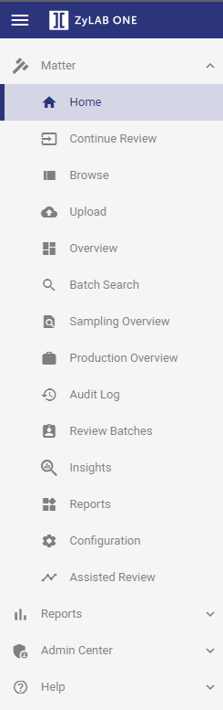
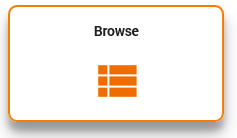
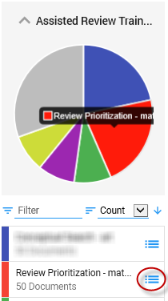

From the navigation tree, select Home.


The first Training Batch of an issue is similar to the Initial Training Set.

| Note: The documents should be tagged with the tags associated with the issue. So, for the issue/initial training set "matisse", the tag "matisse - NR" and "matisse - R" should be used (where NR = Not Responsive and R = Responsive). |